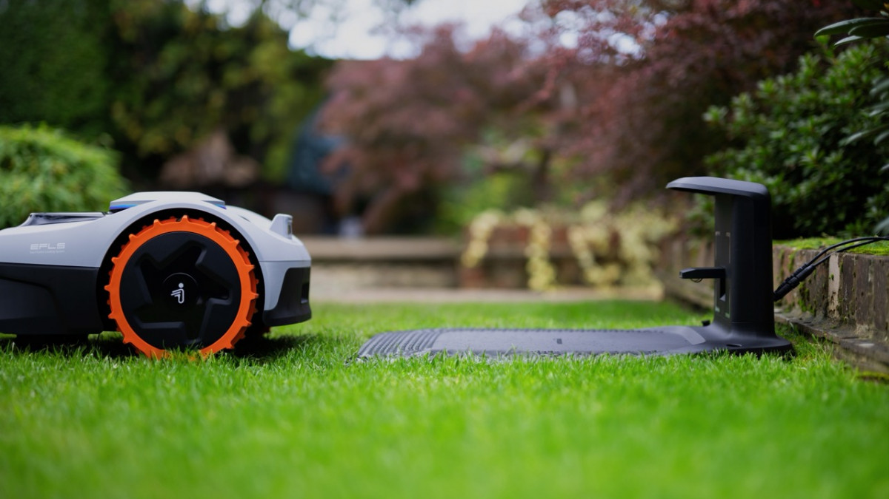
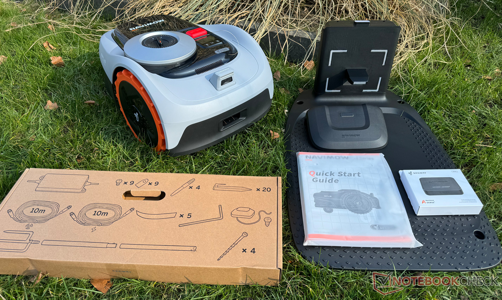
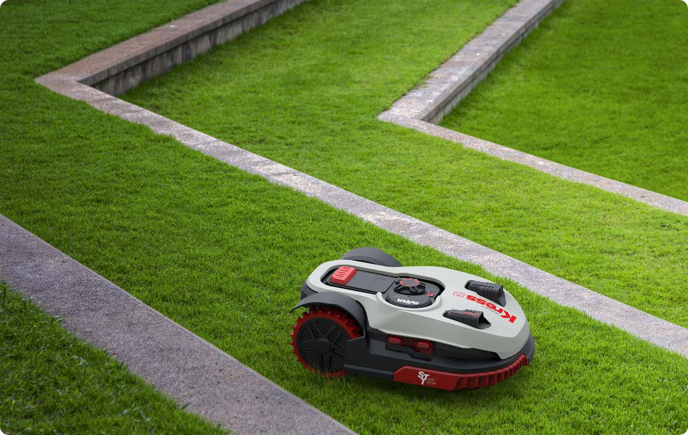

Segway Navimow i105E: panoramica completa per capire davvero cosa offre

Il Segway Navimow i105E è un robot rasaerba pensato per chi vuole un prato sempre ordinato senza dover installare il classico filo perimetrale.
Il Segway Navimow i105E si colloca in una fascia molto interessante del mercato dei robot tagliaerba: quella di chi vuole evitare il filo perimetrale, ma non ha necessariamente un giardino enorme o complesso da gestire.
È un modello pensato per prati compatti, con area consigliata di 500 m² e area massima dichiarata di 600 m², quindi parla soprattutto a proprietari di case con spazi residenziali ordinati, non a chi deve coprire superfici molto estese.
Un robot rasaerba senza filo, ma con una logica più moderna
La sua idea di fondo è semplice: togliere dalla vita del proprietario di casa quella parte noiosa e ripetitiva della cura del prato, ma farlo con una logica più moderna rispetto ai robot tradizionali.
Invece di richiedere la posa del cavo lungo tutto il perimetro, il Navimow i105E usa un sistema di localizzazione che combina segnali satellitari, antenna GNSS, sensori di bordo e supporto visivo per muoversi con precisione.

In pratica, il giardino viene gestito come uno spazio digitale. Questo cambia molto l’esperienza d’uso, perché l’installazione è meno fisica e più simile a una configurazione guidata.
Cosa cambia davvero nell’uso quotidiano
Una delle differenze più evidenti è proprio la semplicità dell’impostazione iniziale. Si posizionano stazione e antenna, si collega l’app e si definiscono le aree di lavoro, le zone vietate e gli eventuali passaggi tra parti diverse del prato.
Per chi ha sempre guardato con diffidenza i robot rasaerba a causa del filo perimetrale, questo approccio può fare una grande differenza.
Il Navimow i105E non è però una macchina da interpretare come “senza pensieri” in senso assoluto. Per dare il meglio, ha bisogno di una configurazione iniziale fatta bene e di un giardino ragionevolmente ordinato.
Le caratteristiche tecniche che aiutano a capirlo meglio
Dal punto di vista pratico, questo modello ha una larghezza di taglio di 18 cm, un’altezza regolabile da 20 a 60 mm, un tempo di ricarica di circa 90 minuti e una rumorosità contenuta, adatta a un uso residenziale discreto.
Questi numeri aiutano a capire il carattere del prodotto: non è pensato per affrontare erba alta e trascurata in un solo passaggio, ma per mantenere il prato sempre in ordine con interventi frequenti e regolari.
Non è un robot da usare ogni tanto quando il prato è fuori controllo: dà il meglio quando lavora con costanza, diventando quasi invisibile nella routine del giardino.
Per quali giardini ha senso
Il Segway Navimow i105E è una soluzione sensata per chi ha un prato medio-piccolo, con una struttura abbastanza leggibile e senza criticità estreme di pendenza o copertura del cielo.
Può affrontare pendenze fino al 30% all’interno dell’area di lavoro, mentre sul bordo il limite è inferiore. Questo significa che può cavarsela bene in molti giardini domestici, ma non nasce per terreni particolarmente difficili o irregolari.

Anche il tema dei bordi va interpretato con realismo. Come molti robot rasaerba, può richiedere qualche rifinitura manuale nelle zone più difficili, soprattutto vicino a siepi, ostacoli o passaggi stretti.
Un prodotto pensato per chi vuole continuità, non interventi pesanti
Il Navimow i105E è interessante soprattutto per chi desidera una manutenzione costante del prato, accetta una prima fase di configurazione fatta con attenzione e preferisce una gestione digitale rispetto all’installazione tradizionale con filo.
Non è il robot ideale per chi pretende di dimenticarsi completamente del giardino, ma per chi vuole semplificare davvero la manutenzione ordinaria senza rinunciare al controllo.
Conclusione
Il Segway Navimow i105E è un robot rasaerba pensato con una logica moderna, adatto a piccoli e medi giardini residenziali e particolarmente interessante per chi vuole evitare il filo perimetrale.
Il suo valore non sta nel fare scena, ma nel mantenere il prato in ordine in modo regolare, silenzioso e preciso. È una scelta sensata per chi cerca continuità, semplicità di gestione e un sistema di taglio più evoluto rispetto ai modelli tradizionali.